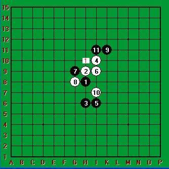

【茗弈】小刀VS中山 对局棋评
#1 【茗弈】小刀VS中山 对局棋评 作者：自来水 发表时间：2012-4-10 7:55:24
几年前有幸成为【茗弈】小刀的徒弟很开心，【茗弈】小刀（刀姐）——资深的网络女棋手之一，乐于助人，热情善良，【茗弈】棋社创建人，至今拥有分社数个，培养出了一批批有上进心的优秀棋手，如今活跃在各种五子棋平台上。
师父前些天闲暇之余与好朋友对弈一局，并把她们的对局发给我看，亦给我提供了学习的机会，在此对师傅深表感谢。
开局为常规的平衡局瑞星，小刀师父执黑，对手为中山智晴。

正常应对到第 10 手，师父 11 手变着于 I11 ，此 11 手觉得是白优，白 12 手正常应对 H10 ，
/*760*90，创建于2012-2-9*/ var cpro_id = 'u761865';
#2 Re:【茗弈】小刀VS中山 对局棋评 作者：茗弈宽容 发表时间：2012-4-10 18:39:52
 这臭小子分析得还蛮清楚到位呢！
这臭小子分析得还蛮清楚到位呢！
#3 Re:【茗弈】小刀VS中山 对局棋评 作者：顾宁馨 发表时间：2012-4-10 18:59:42
有个疑问，黑21下在L9会如何？
［ 自来水 于 2012-4-10 21:05:38 时花20金币送鲜花一朵］黑胜
［ 自来水 于 2012-4-10 21:16:57 时奖励此帖[金币加 100 威望加1］0+1
［此帖子已被 自来水 在 2012-4-10 21:17:41 编辑过］
［ 茗弈宽容 于 2012-4-11 9:45:04 时花20金币送鲜花一朵］
#4 Re:【茗弈】小刀VS中山 对局棋评 作者：冰霜 发表时间：2012-4-10 20:26:42
 师父好棒！
师父好棒！
#5 Re:【茗弈】小刀VS中山 对局棋评 作者：陌雨菡 发表时间：2012-4-10 23:28:45
刀姐棋下滴棒，少保棋评分析滴也透彻
［ 茗弈宽容 于 2012-4-11 9:44:38 时花20金币送鲜花一朵］
［ 茗弈宽容 于 2012-4-11 9:44:40 时花20金币送鲜花一朵］
［ 茗弈宽容 于 2012-4-11 9:44:42 时花20金币送鲜花一朵］
［此帖子已被 自来水 在 2012-4-13 16:59:00 编辑过］
#6 Re:【茗弈】小刀VS中山 对局棋评 作者：轻拈花落 发表时间：2012-4-11 9:12:05
精彩....正仔细地看每一步走棋 努力地在看.....
努力地在看.....
［ 茗弈宽容 于 2012-4-11 9:44:07 时花20金币送鲜花一朵］
［ 茗弈宽容 于 2012-4-11 9:44:10 时花20金币送鲜花一朵］
［ 茗弈宽容 于 2012-4-11 9:44:11 时花20金币送鲜花一朵］
#7 Re:【茗弈】小刀VS中山 对局棋评 作者：茗弈宽容 发表时间：2012-4-11 9:43:35
这盘棋赢得很侥幸其实，主要是后边中山弟弟没时间了18手稍弱了应该先在右边攻。另外30手白如果这么防，黑也难下了
#8 Re:【茗弈】小刀VS中山 对局棋评 作者：漁民 发表时间：2012-4-11 15:53:18
中山智晴=【茗弈】中山？？？［ 自来水 于 2012-4-11 17:37:12 时奖励此帖[金币加 100 威望加1］0+1
［此帖子已被 自来水 在 2012-4-11 17:37:34 编辑过］